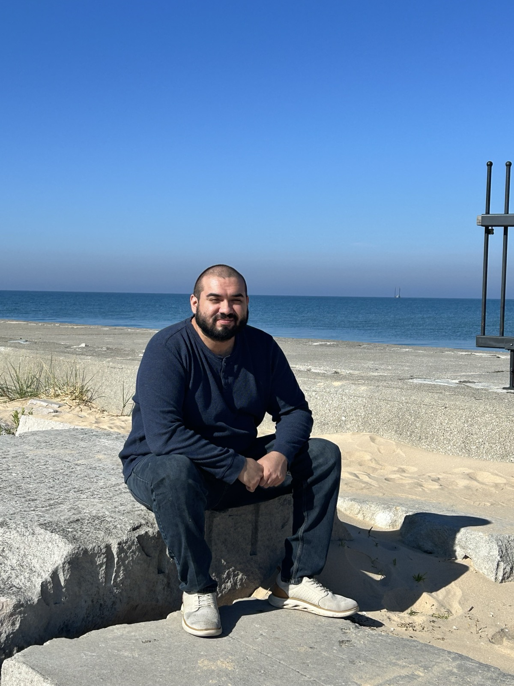

01/04
PROFILE / CYBERSECURITY / DEFENSIVE ENGINEERING
Building systems
that make risk visible.
I build practical security systems around threat intelligence, automation, network defense, and research.

Cybersecurity / Defensive Engineering
CARD
01
PROFILE
01
PROFILE
01PROFILE
The person
behind the systems.
I’m a cybersecurity and IT professional with hands-on experience in technical support, systems operations, networking, and security-focused projects.
I build practical security systems around threat intelligence, automation, network defense, and research — always with an emphasis on making complicated signals easier to act on.
02SELECTED WORK
Projects with a
point of view.
Repositories, automation systems, and intelligence platforms designed to move from observation to response.
02ACASE FILE VIEWER
Select a project above to load its analysis.
03CAPABILITIES
The toolkit
behind the work.
Security operations, intelligence analysis, infrastructure, automation, and engineering.
Threat detection · Incident response · Threat hunting · SIEM fundamentals
OSINT · GEOINT · Event correlation · Risk analysis · Reporting
Windows Server · Active Directory · TCP/IP · DNS · Firewalls · IDS/IPS
Python · PowerShell · Bash · GitHub Actions · REST APIs · Data pipelines